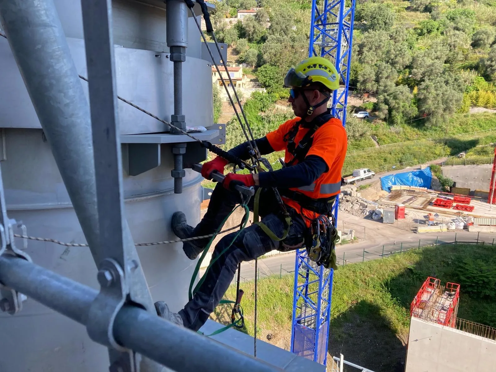

nettoyage silo 06
nettoyage de silo industriel Alpes-Maritimes
Nettoyage et maintenance de silos dans les Alpes-Maritimes (06)

Pourquoi faire appel à des professionnels pour le nettoyage de silos ?
Le nettoyage des silos est une operation delicate qui demande des competences specifiques et du materiel adapte. Notre entreprise specialisee en nettoyage de silo industriel intervient en toute securite, notamment dans les environnements poussiereux, etroits ou en hauteur. Qu’il s’agisse de nettoyage de silos de stockage, de silo à granules ou de silo à farine, nous garantissons une prestation rapide, efficace et conforme aux normes d’hygiène et de securite.
Quels types de silos sont concernes ?
Nos techniciens assurent le nettoyage silo et la maintenance silo sur tous types d’installations : silos alimentaires, silos agricoles, silos industriels, silos à granules de bois ou silos à farine. Nous adaptons nos methodes d’intervention selon la taille, la structure et le contenu des silos pour un resultat optimal et sans risque pour vos installations.
Quel est le tarif pour un nettoyage de silo dans le 06 ?
Le prix d’un nettoyage de silo depend de plusieurs facteurs : volume, accessibilite, type de residus à evacuer, frequence d’intervention, etc. Pour une estimation precise dans les Alpes-Maritimes (06), contactez-nous directement au 04 97 14 89 39 ou demandez votre devis gratuit personnalise.
CONTACTEZ - NOUS
QUESTIONS SUR LE NETTOYAGE DE SILOS
Quels types de silos nettoyez-vous ?
Nous intervenons sur tous types de silos industriels : silos à grains, silos à ciment, silos à granulés, cuves de stockage, réservoirs. Nos cordistes sont formés aux environnements industriels et aux espaces confinés.
À quelle fréquence faut-il nettoyer un silo ?
La fréquence dépend du produit stocké et de la réglementation applicable. En général, un nettoyage annuel est recommandé pour les silos alimentaires, et tous les 2-3 ans pour les silos industriels. Nous établissons un planning adapté à votre activité.
Comment se déroule une intervention de nettoyage de silo ?
Après une étude de sécurité, nos cordistes descendent à l'intérieur du silo équipés de systèmes de protection respiratoire et d'accès par corde. Nous procédons au décroûtage des parois, à l'évacuation des résidus et au nettoyage complet de la structure.
Réalisez-vous aussi des inspections de silos ?
Oui, nous effectuons des inspections visuelles et techniques des silos pour détecter d'éventuelles dégradations : corrosion, fissures, problèmes d'étanchéité. Ces inspections peuvent être réalisées par nos cordistes équipés de caméras.
Intervenez-vous pendant l'activité de l'usine ?
Nous planifions nos interventions pour minimiser l'impact sur votre activité. Nous pouvons intervenir le week-end ou en dehors des heures de production selon vos contraintes. Notre objectif est d'assurer un nettoyage efficace sans perturber votre exploitation.